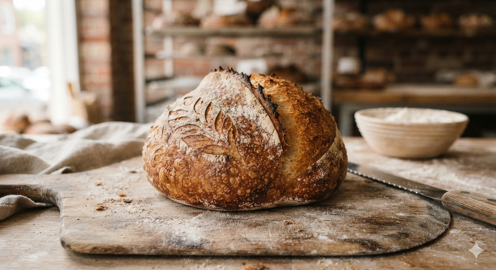
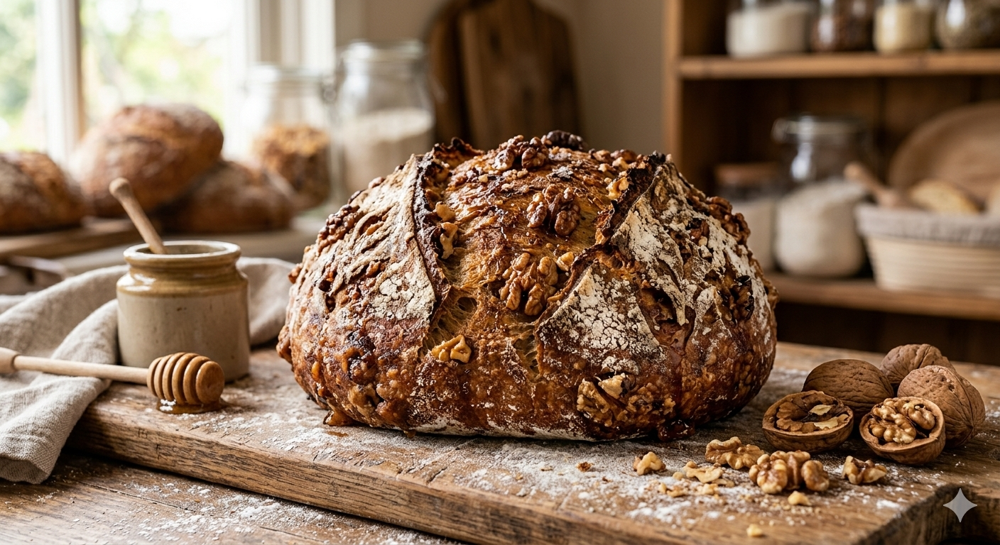
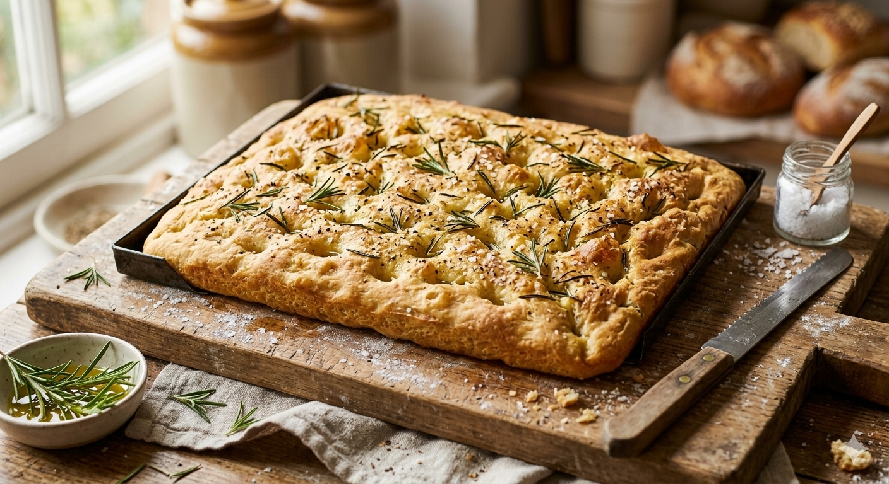

Sourdough & Country Breads
The Midnight Crust Sourdough
Crisp, deeply caramelized shell with an airy, tangy interior.

Wild Honey & Walnut Boule
Infused with raw, local wildflower honey and toasted organic walnuts.

Rosemary Sea Salt Focaccia
Drizzled with cold-pressed olive oil, topped with fresh garden rosemary and hand-harvested flake salt.
